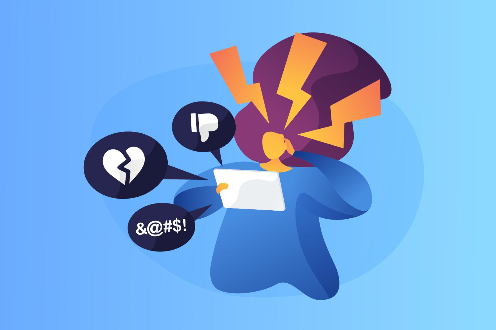

seccion
Ciberacoso
Ciberacoso es acoso o intimidación por medio de las tecnologías digitales. Puede ocurrir en las redes sociales, las plataformas de mensajería, las plataformas de juegos y los teléfonos móviles. Es un comportamiento que se repite y que busca atemorizar, enfadar o humillar a otras personas. Por ejemplo:
- Difundir mentiras o publicar fotografías o videos vergonzosos de alguien en las redes sociales.
- Enviar mensajes, imágenes o videos hirientes, abusivos o amenazantes a través de plataformas de mensajería.
- Hacerse pasar por otra persona y enviar mensajes agresivos en nombre de dicha persona o a través de cuentas falsas.
El acoso cara a cara y el ciberacoso ocurren juntos a menudo. Pero el ciberacoso deja una huella digital; es decir, un registro que puede servir de prueba para ayudar a detener el abuso.
¿Qué hacer en caso de ser víctima del ciberacoso o de presenciarlo?
Si eres víctima de acoso virtual, quieres prevenirlo o conoces a alguien que esté siendo víctima, sigue estas recomendaciones:
- No compartas tu información personal.
- Si te acosan, guarda pruebas del acoso.
- Es mejor no atender a las provocaciones, ignóralas.
- Si recibes amenazas graves, no te quedes callado, pide ayuda. De preferencia, conversa con una persona adulta, como tus padres, profesores o alguien en quien confíes.
- No seas cómplice de un ciberacosador. Si te envían algún tipo de información en donde se humilla o avergüenza a un amigo, compañero de clase o a un menor de edad, no la difundas.
